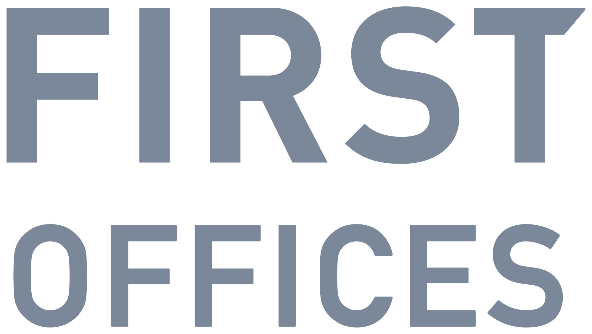
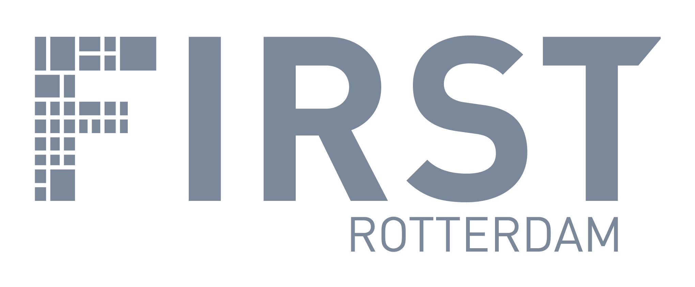

Variant op het bestaande logo: de F uit het monogram vervangt de F van het woordmerk, op dezelfde kaphoogte en met dezelfde letterafstand. IRST en ROTTERDAM zijn ongewijzigd uit het originele logo overgenomen. De F heeft altijd dezelfde kleur als de rest van het woordmerk; First Olive komt terug in de cut.


